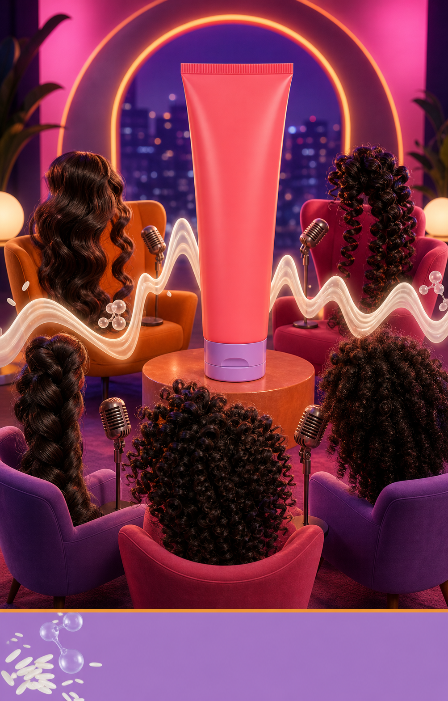

Curl Talk Defining Cream — Let Your Curls Do the Talking
A late-night talk-show roundtable brings waves, curls, and coils to the microphone. A silky cream ribbon becomes the glowing audio waveform connecting every texture—definition, movement, and bounce made visible.
Create with LoomixView official product
Hook options
8-second storyboard
Open on an empty late-night talk-show set.
Let waves, curls, and coils bounce into their seats.
Place a vintage microphone in front of each texture.
Turn a cream ribbon into a glowing audio waveform.
Reveal defined, moisturized, flexible movement.
End on the tube, curl panel, hook, and CTA.
Caption direction
Made for rapid testing
Loomix turns one product image into a storyboard, short-video direction, captions, and ready-to-post ad copy.
This is an unsolicited creative concept made by Loomix for demonstration purposes. Loomix is not affiliated with or endorsed by Not Your Mother's.